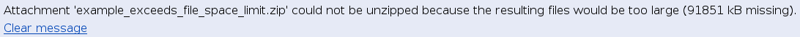
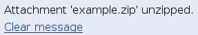
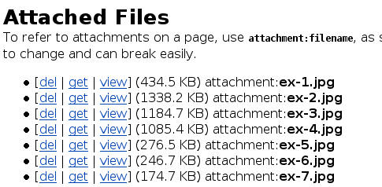
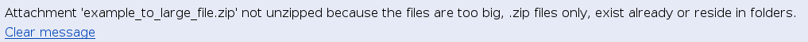
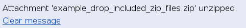
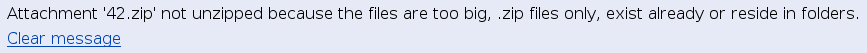

Enabling the AttachFile action
The AttachFile action lets a page have multiple attached files. Since file uploads could be abused for DoS (Denial of Service) attacks, AttachFile is an action that can be disabled by the wiki administrator. See Configuration of MoinMoin for details.
Creating attachments
To create a new attachment, you can either add an attachment link to any page (see below on how to do that), or click on the AttachFile link at the bottom of the page. In the first case, you will see an Upload new attachment link after saving the page. Clicking on it will lead you to the upload page, just like directly clicking on the AttachFile link.
The upload form consist of two fields. In addition to the file input there is an optional field (Rename to), used to give the file a different name than on your own computer.
An upload will never overwrite an existing file. If there is a name conflict, you have to rename the file that you want to upload. Otherwise, if "Rename to" is left blank, the original filename will be used.
Existing attachments may be viewed, downloaded, or removed, depending on the configuration of the wiki and the access rights of the user. For example, an attachment cannot be deleted if the user doesn't have the delete permission on the particular page.
Any upload or deletion of attachments is reflected on RecentChanges and thus subject to peer review. Unlike page changes, there is no history though, so keep a local copy of files so you can revert possible vandalism.
Listing and information about attachments
Two macros are defined which give information about attachments on a page. The [[AttachInfo]] macro gives a short sentence about any attachments:
There are 8 attachment(s) stored for this page.
The [[AttachList]] macro lists files attached to a page:
- [get | view] (3.7 KB) attachment:unzip1.png
- [get | view] (6.6 KB) attachment:unzip2.png
- [get | view] (3.1 KB) attachment:unzip3a.png
- [get | view] (13.4 KB) attachment:unzip3b.png
- [get | view] (5.5 KB) attachment:unzip5.png
- [get | view] (4.0 KB) attachment:unzip6.png
- [get | view] (5.3 KB) attachment:unzip6b.png
- [get | view] (3.2 KB) attachment:unzip7.png
AttachFile/unzip1.png){kind=link}
AttachFile.html?action=AttachFile&do=view&target=unzip1.png){kind=link}
AttachFile/unzip2.png){kind=link}
AttachFile.html?action=AttachFile&do=view&target=unzip2.png){kind=link}
AttachFile/unzip3a.png){kind=link}
AttachFile.html?action=AttachFile&do=view&target=unzip3a.png){kind=link}
AttachFile/unzip3b.png){kind=link}
AttachFile.html?action=AttachFile&do=view&target=unzip3b.png){kind=link}
AttachFile/unzip5.png){kind=link}
AttachFile.html?action=AttachFile&do=view&target=unzip5.png){kind=link}
AttachFile/unzip6.png){kind=link}
AttachFile.html?action=AttachFile&do=view&target=unzip6.png){kind=link}
AttachFile/unzip6b.png){kind=link}
AttachFile.html?action=AttachFile&do=view&target=unzip6b.png){kind=link}
AttachFile/unzip7.png){kind=link}
AttachFile.html?action=AttachFile&do=view&target=unzip7.png){kind=link}
Linking to attachments
To refer to attachments on a page, use attachment:filename.ext; a link of this kind follows all the rules for normal links, i.e. pictures are automatically inlined. Do not use the URL of the [get] link you can see on the attachments upload page, since these links are subject to change and can break easily on reconfiguration of the wiki. To refer to files attached to other pages, use attachment:WikiName/filename.ext.
Instead of attachment:, you can also use inline:, which tries to inline the attachment's content. For pictures (files ending in .gif, .jpg, .jpeg, or .png) there is no difference. For Python sources (i.e. attachments with a .py extension), they are shown as syntax-highlighted source displays. For all other files, the behaviour is the same as for simple attachment: links.
The third type of link is drawing:, explained in the next section.
Editing vector drawings
A link looking like drawing:picturename will allow you to interactively edit vector diagrams via the built-in Java applet. The applet will then store three attachments, "picturename.draw", "picturename.png" and "picturename.map". After you first saved a drawing, the generated PNG picture is displayed for the drawing: link. The MAP is used to activate parts of the image as links. This means that you only need Java enabled for editing, while displaying the results works with any browser.
To edit a drawing after the first save, click on AttachFile and use the [edit] link that is displayed instead of [view] for the .draw attachment. You can also click on the invisible 5 pixel border around the picture to reach the edit mode. Saving a drawing is reflected in RecentChanges.
 Note: the applet is not WikiName sensitive. You need to supply actual (either relative or absolute) URLs as links. Note: drawings containing non-ascii characters in their name are not supported currently.
Note: the applet is not WikiName sensitive. You need to supply actual (either relative or absolute) URLs as links. Note: drawings containing non-ascii characters in their name are not supported currently.
For details on using the drawing applet, see Plugins/TWikiDrawPlugin.
Installing packages
Unzipping files
To get access to the unzip feature you need the following rights on the page:
- read
- write
- delete
e.g.
#acl UserName:admin,read,write,delete All:read
We implemented some protection for the server against abuse of this feature. Zip files in a Zip file are dropped by unzipping them. By definition of the configuration option unzip_attachments_space, only this total amount of bytes can be used to unzip files. If there are already files in the directory, the amount of them are subtracted from this number. The size of a single file in the archive which will be extracted can be limited using the configuration option unzip_single_file_size. By unzip_attachments_count you could restrict the number of files which are extracted from the zip file.
The rules for unzipping are implemented in the same way as for uploading one file. It is not allowed to overwrite an existing file by unzipping a file.
By unzipping a zip file only files from the first layer are unzipped. Files in directories are ignored.
A valid zip file could be created this way:
zip example.zip *.jpg
1. Uploading a zip file
After you have uploaded a zip file, you can see the unzip link.
2. No rights to unzip
If you have not enough rights, you only see the usual dialogue.
3. Not enough free space free
If the resulting unpacked files exceed the limit of filespace for attachments, you get this warning.

This behaviour is controlled by the variable: unzip_attachments_space
4. Successfully unzipped


5. Extracted files would be too large
If a file in the archive exceeds the defined unzip_single_file_size then it is not unzipped.

6. zip files in zip file will be ignored
If zip files are included in the zip archive, they will be skipped during the extraction. Regular files included will be extracted.

So the famous 42.zip does not affect the system.

To do on this page
- to review